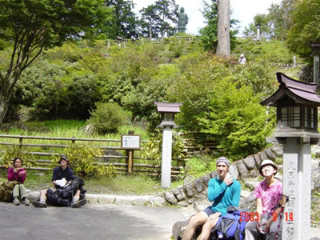
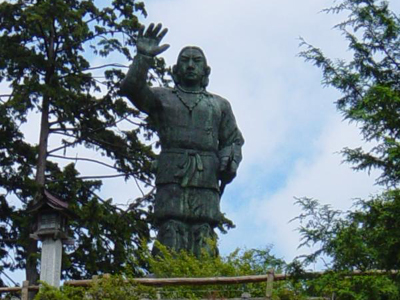
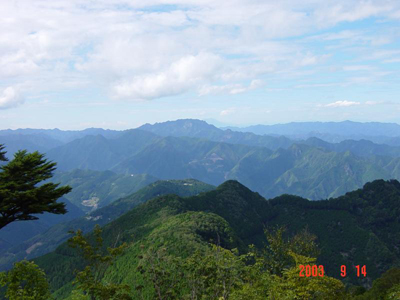
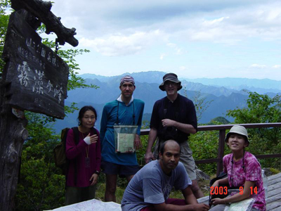
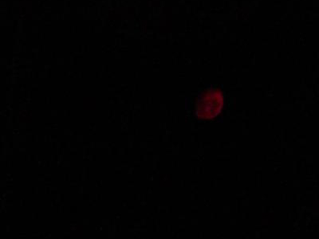
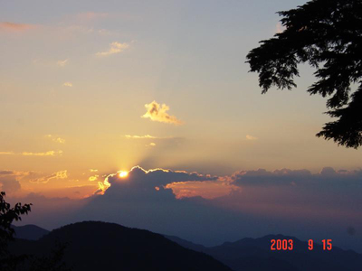
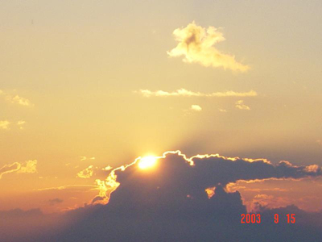
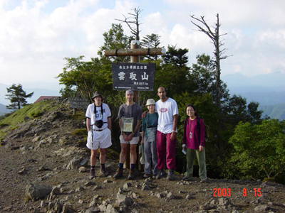
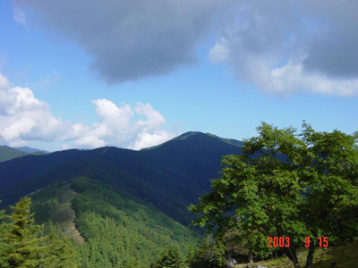
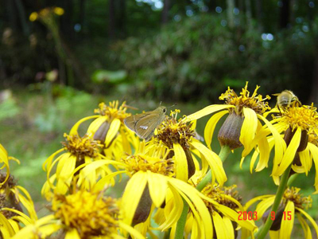

It was really very hot and humid day! |

Hi guys how are U? |

Views were great! |

Rest for a while. |
|

Red Moon!!!! First I thought that Sun got confused and woke up in the night.. |

Hu! Hu! Im here!! |
|

OHAYO!!! |

Group photo at the summit. |
|

Kumotori-yama from 1750 m |

Fly, flowers and bee . |